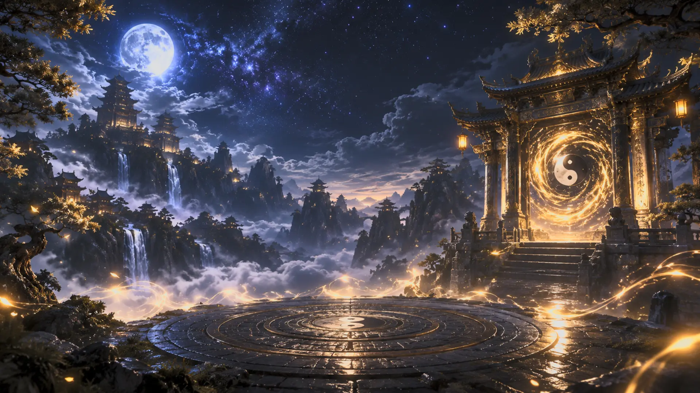
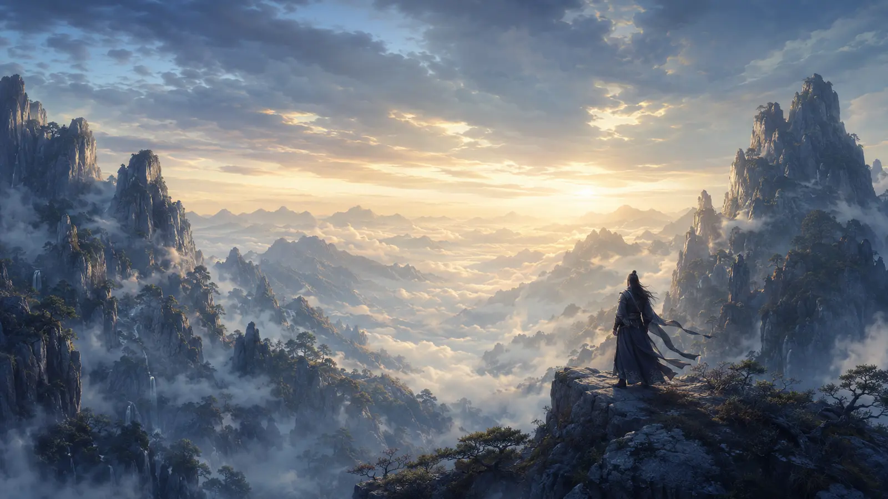
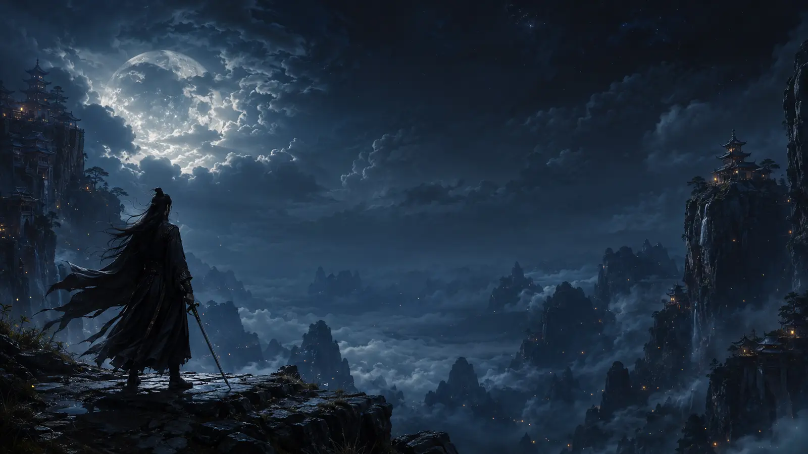
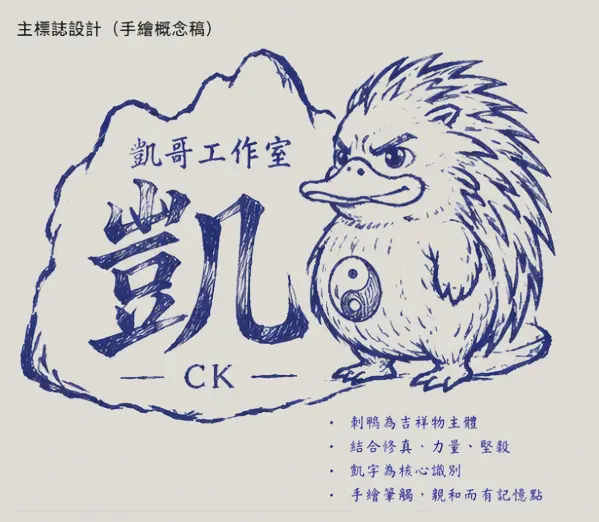

現實自律 × 異界修仙
將現實的自律轉化為修行，五行養成改變你的命運。
將現實的自律轉化為修行，五行養成改變你的命運。
手機外出探索、收集靈氣與資源，讓現實足跡成為仙途。
PC 端電影級開放世界，硬派戰鬥、彈反與多人首領。
與同門並肩作戰，爭奪靈脈，問鼎諸天。
雙端互通、資源共享，無縫連結現實與異界。

互動、捲動與 GitHub Pages 部署流程全面整理。

Epic 登入、EOS 與第一章流程持續整合。

天道破碎，太乙天門重啟，凡人正式問道。
THE BROKEN HEAVEN
二十七重境界，一步一印，沒有天生至尊。
太虛宗、天劍門、丹霞谷、靈獸宗、九幽教等勢力，共同爭奪靈脈與天命。
太乙天門開啟後，依序進入青雲谷、天劍山、萬妖森林、幽冥深淵與九天仙界。
SCENES OF THE HEAVENS
DEVELOPMENT ROADMAP
官網、EOS 登入、新手村、50–100 人同步測試。
宗門、副本、世界 Boss、拍賣場與社交系統。
Epic Games Store、Steam、賽季、跨服與世界事件。
TAIYI COMPASS APP
每日修行、GPS 探索、靈氣採集、五行成長與角色管理，將現實中的每一步同步到 PC 世界。

關注官方社群，獲取最新消息與專屬福利！